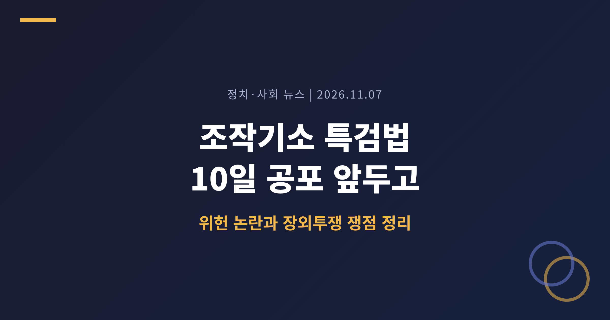
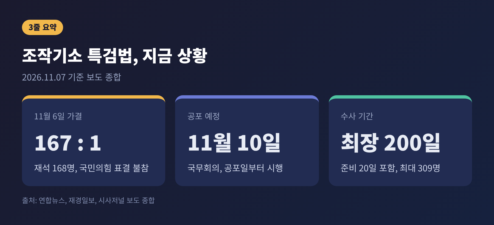
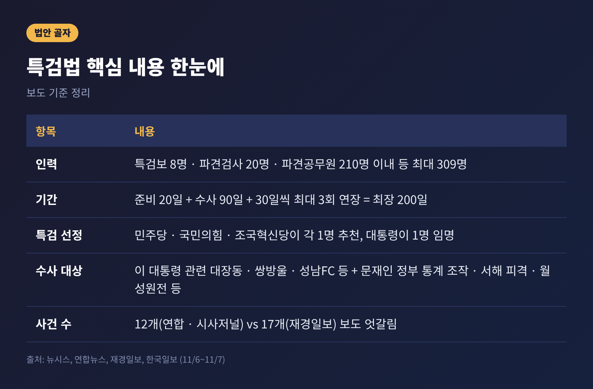
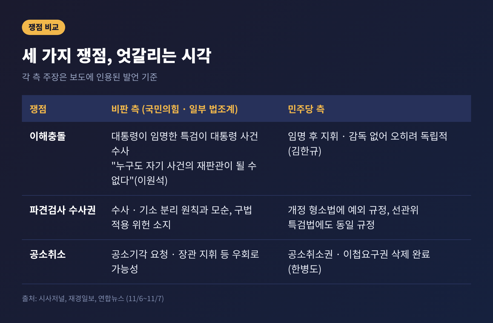
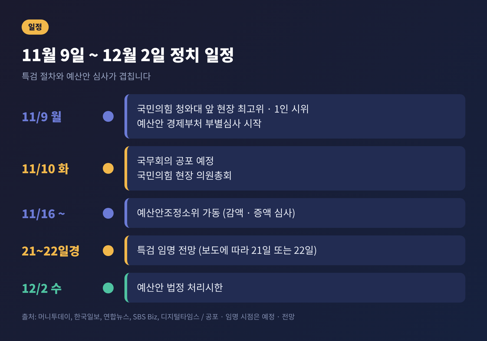
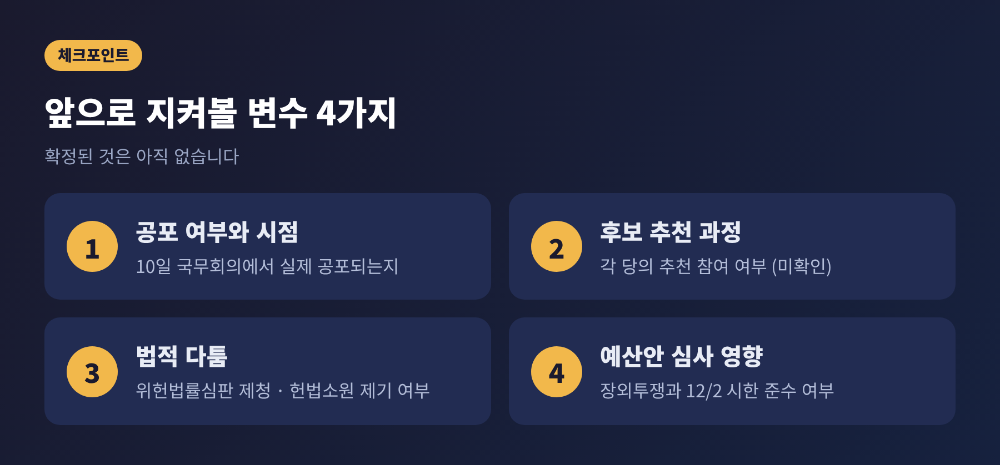

오늘은 6일 국회를 통과한 조작기소 특검법이 공포를 앞두고 어떤 논란에 놓여 있는지 정리해 보려 합니다. 법은 10일 국무회의에서 공포될 가능성이 높고, 특검 임명은 21~22일께로 전망됩니다. 국민의힘은 7일 장외집회에 나섰고, 민주당 안에서도 신중론이 나왔습니다. 핵심은 세 가지입니다. 이해충돌, 파견검사 수사권, 진행 중인 재판과의 충돌입니다.

6일 본회의에서 조작기소 특검법이 재석 168명 중 찬성 167표, 반대 1표로 가결되었습니다. 반대표는 개혁신당 이주영 의원이었다고 보도되었습니다. 국민의힘 의원들은 표결에 참여하지 않고 퇴장했습니다.
국민의힘이 5일 필리버스터에 들어갔고, 약 24시간 뒤 민주당이 토론 종결 동의안을 가결한 뒤 법안을 처리했습니다. 이재명 정부 들어 일곱 번째 특검입니다.
법의 골자는 이렇습니다.
수사 대상에는 이재명 대통령 관련 대장동·위례·백현동 개발 의혹, 쌍방울 대북송금, 성남FC 후원금 사건이 들어갑니다. 문재인 정부 시절의 통계 조작, 서해 공무원 피격, 월성원전 1호기 경제성 조작 의혹도 포함됩니다.
다만 대상 사건의 수는 보도마다 다릅니다. 연합뉴스와 시사저널은 12개, 재경일보는 17개로 전했습니다. 집계 방식이 다른 것으로 보이며, 공포 후 확정 조문을 확인할 필요가 있습니다.

이유는 세 겹입니다.
첫째, 수사 대상에 현직 대통령의 사건이 들어 있습니다. 대통령이 기소된 사건은 불소추특권에 따라 재판이 멈춘 상태입니다. 특검이 검찰 수사를 '조작'이라고 결론 내리면 이 재판에 영향을 줄 수밖에 없다는 시각이 있습니다.
둘째, 시기가 예산 국회와 겹칩니다. 내년도 예산안은 820조 원대로 역대 최대입니다. 9~12일 부처별 심사, 16일부터 예산안조정소위, 12월 2일 법정 처리시한으로 이어집니다. 국민의힘은 아직 예결위 보이콧 여부를 정하지 않았다고 밝혔고, 뉴스1은 "예산 심사는 계속"이라고 전했습니다. 그래도 연말 예산 정국이 험해질 것이라는 전망이 나옵니다.
셋째, 이 법이 앞으로 선례가 됩니다. 정권이 바뀐 뒤 이전 정권의 수사를 특검으로 되짚는 방식이 반복될 수 있는지를 가르는 사안입니다.
가장 큰 공방은 임명 구조입니다.
국민의힘 주진우 의원은 민주당이 추천하고 대통령이 임명하는 구조를 이해충돌이라고 비판했습니다. 이원석 전 검찰총장은 "누구도 자기 사건의 재판관이 될 수는 없다"고 말했습니다. 국회 법사위 전문위원 보고서도 재판 중인 대통령이 속한 여당이 후보를 추천하는 규정은 신중히 검토할 필요가 있다고 지적했습니다.
과거 사례도 거론됩니다. 2016년 국정농단 특검과 2018년 드루킹 특검은 당시 여당의 추천권을 배제했습니다. 2019년 헌법재판소는 국정농단 특검법 헌법소원에서 여당에 추천권을 주지 않은 것이 합헌이라고 전원일치로 판단했습니다. 다만 이 결정이 이번과 같은 구조의 위헌 여부까지 다룬 것은 아니어서, 직접적인 선례로 보기는 어렵습니다.
민주당의 반론은 다릅니다. 김한규 원내정책수석부대표는 다른 수사기관 수장도 대통령이 장관을 통해 지휘하는 만큼, 임명 후 대통령의 지휘·감독을 받지 않는 특검이 오히려 독립적이라고 말했습니다. 한병도 원내대표는 특검의 목적이 조작수사·조작기소 의혹의 실체 규명이라고 강조했습니다.
두 번째 쟁점은 부칙 제6조입니다.
검사의 직접수사권을 없애는 형사소송법 개정을 주도한 것은 민주당입니다. 그런데 이번 특검법은 특검과 파견검사에게 개정 전 규정을 적용하도록 예외를 두었습니다. 일반 검사에게는 막은 수사권을 특검 파견 검사에게는 돌려준 셈이어서, 수사·기소 분리 원칙과 맞지 않는다는 비판이 나옵니다.
김현 전 대한변협 회장은 이를 모순이라고 평가했습니다. 조국혁신당 조국 혁신정책연구원장은 효력을 잃은 구법을 적용하면 위헌·위법 소지가 있고, 파견검사가 수사하면 위헌법률심판 제청으로 재판이 중단될 수 있다며 수정안 표결을 제안했습니다. 민주당은 이 조항을 고치지 않았습니다.
민주당 입장은 이렇습니다. 개정 형소법에 이미 개별 특검법 예외가 규정되어 있고, 여야 합의로 만든 선관위 특검법에도 같은 규정이 있다는 것입니다. 김한규 수석부대표는 "위헌이라고 보는 조항은 없다"고 밝혔습니다.
실무 문제도 있습니다. 한국일보는 수사 대상에 오를 검사와 수사관이 수백 명에 이를 것으로 보았고, 일선 청의 인력난 때문에 파견을 강제하기도 어렵다는 현장 반응을 전했습니다. 시사저널은 이진수 법무부 차관이 파견 규모를 절반 이하로 줄이자는 의견을 냈다고 전했으나, 반영되지 않았다고 합니다.

민주당은 법사위 심사 과정에서 특검의 공소취소 권한과 기존 사건 이첩요구권을 삭제했습니다. 한병도 원내대표는 그래서 야당이 반대할 이유가 없다고 말했습니다.
국민의힘은 우회로가 남았다고 봅니다. 박형수 의원은 공소기각 요청이나 법무부 장관의 공소취소 지휘가 가능하다고 주장했습니다. 국회 법사위 최기도 전문위원도 형사소송법 제255조가 준용되면 공소취소가 가능하다고 해석될 여지가 있다고 검토보고서에 적었습니다. 연합뉴스는 일각에서 특검 수사를 바탕으로 법무부 위원회가 공소취소를 권고하거나, 법원이 공소를 기각할 가능성을 거론한다고 전했습니다.
이 대목에서 중요한 것은 '가능성'과 '확정'을 구분하는 일입니다. 현재 법안에 공소취소를 직접 규정한 조항은 없습니다. 우회로 시나리오는 이후 여러 기관의 판단이 겹쳐야 성립하는 가정입니다. 반대로, 조항이 없다는 사실만으로 우려가 해소된다고 말하기도 어렵습니다.
주목할 점은 범여권 내부의 신중론입니다.
정성호 민주당 의원(전 법무부 장관)은 라디오에서 숙의가 더 필요했다고 말했습니다. 국정조사와 검찰 조사가 이미 진행되었는데 성과가 없으면 부작용이 크다는 취지입니다. 시사저널에 따르면 "태산명동서일필"이라는 표현으로 경계했다고 합니다. 김용민 의원은 특검 자체에는 반대하지 않지만 중대범죄수사청이나 고위공직자범죄수사처를 활용하는 편이 낫다는 의견이었습니다.
한 여당 관계자는 재경일보에 공소가 실제로 취소되면 '국민이 누리지 못하는 특혜'라는 공세에 부딪혀 민심이 이탈할 수 있다고 우려했습니다. 익명 발언이라는 점은 감안해야 합니다.
예전에는 특검법이 야당과 여당의 정면 대결로만 읽혔습니다. 지금은 조작 여부를 가려야 한다는 필요성과 절차적 정당성 사이에서 여권 내부도 목소리가 나뉘는 모양새입니다.
국민의힘은 6일 국회 본관 계단 앞 집회에 이어 7일 오후 경복궁역 일대에서 규탄 집회를 열었습니다. 한국일보에 따르면 의원 70여 명이 참석했고, 당 추산 참석자는 15만 명입니다. 독립적으로 확인된 수치는 아니어서 당 추산으로만 받아들이는 편이 적절합니다.
장동혁 대표는 이 법을 "이재명 탈옥법"이라 부르며 대통령 탄핵을 요구했습니다. 정점식 원내대표는 필리버스터 종결을 "의회 쿠데타"라고 규정했습니다. 재경일보는 국민의힘이 위헌법률심판 제청 신청도 검토 중이라고 전했는데, 구체적인 방식은 아직 알려지지 않았습니다.
민주당은 공소취소 조항을 뺐는데도 공세가 과하다고 반박합니다. 한병도 원내대표는 국정감사와 예산 심사 기간의 장외투쟁을 문제 삼았습니다.
앞으로의 일정은 다음과 같습니다.

정리하면 지켜볼 변수는 네 가지입니다.

끝으로 한 가지만 덧붙이겠습니다.
조작이 있었는지를 밝히는 일과, 그 일을 맡는 방식이 공정한지를 따지는 일은 별개의 질문입니다. 두 질문 모두 답을 구하는 과정에서 서로의 근거가 흔들리지 않아야 합니다.
특검이 시작되기도 전에 결론을 단정하기보다는, 21일께 누가 어떤 절차로 임명되는지를 차분히 지켜볼 일입니다.
※ 이 글은 2026년 11월 7일 기준 언론 보도를 바탕으로 정리했으며, 법안 원문과 공식 조문은 직접 확인하지 못했습니다. 이후 전개에 따라 내용이 달라질 수 있습니다.